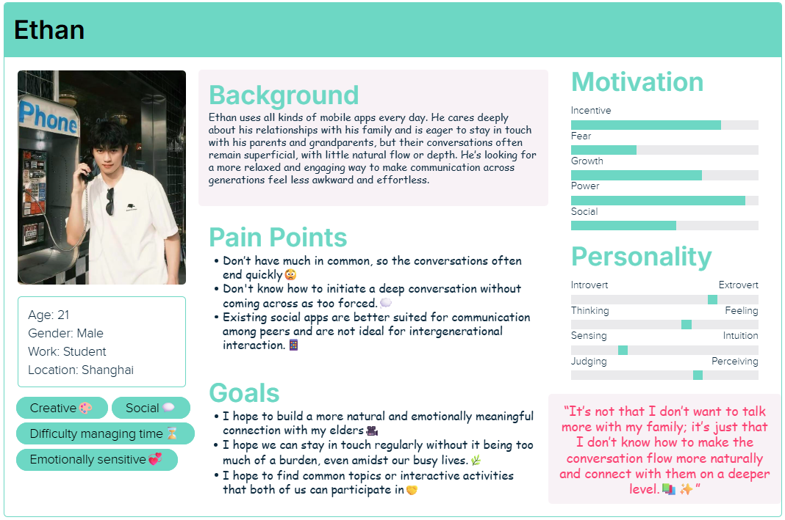
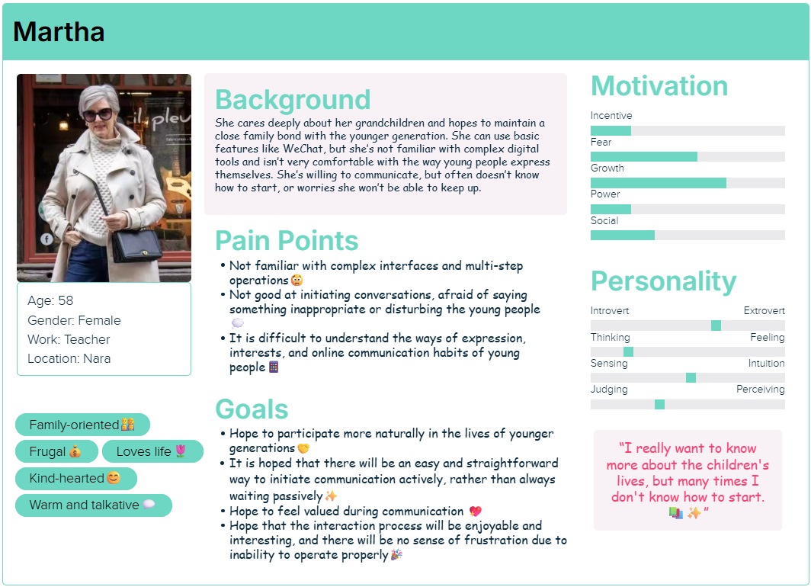
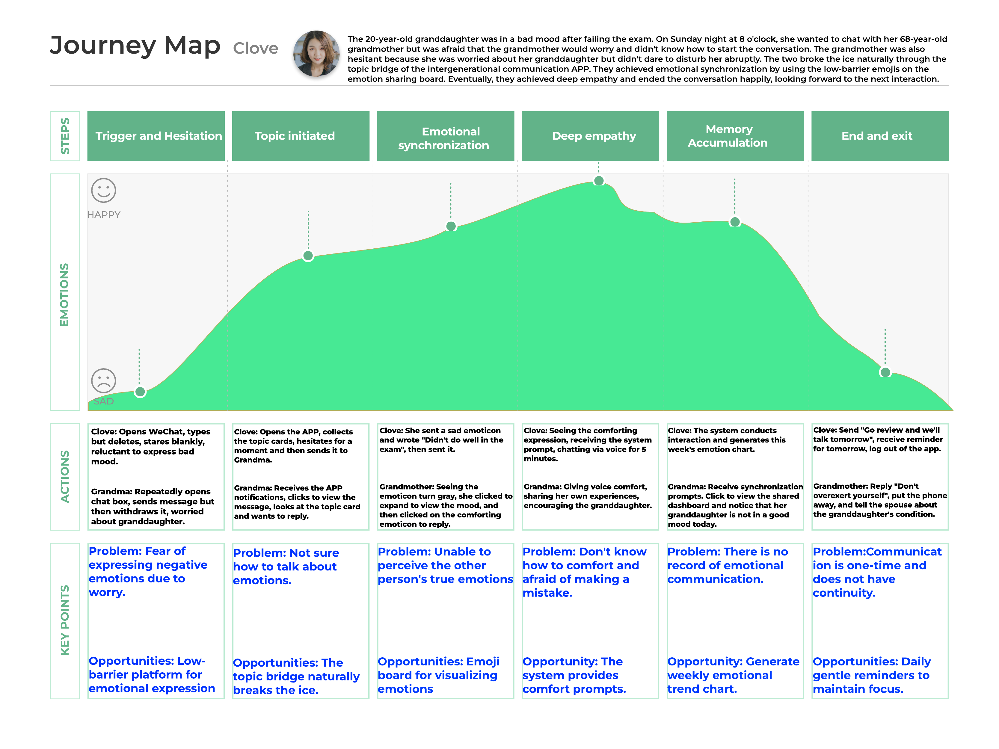
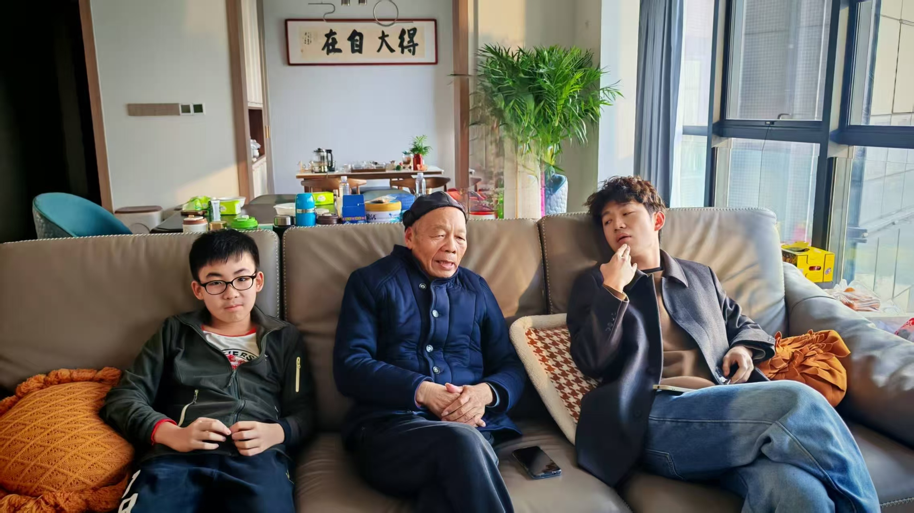
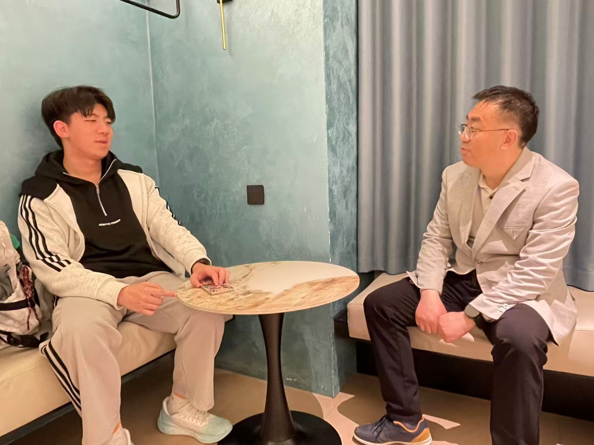
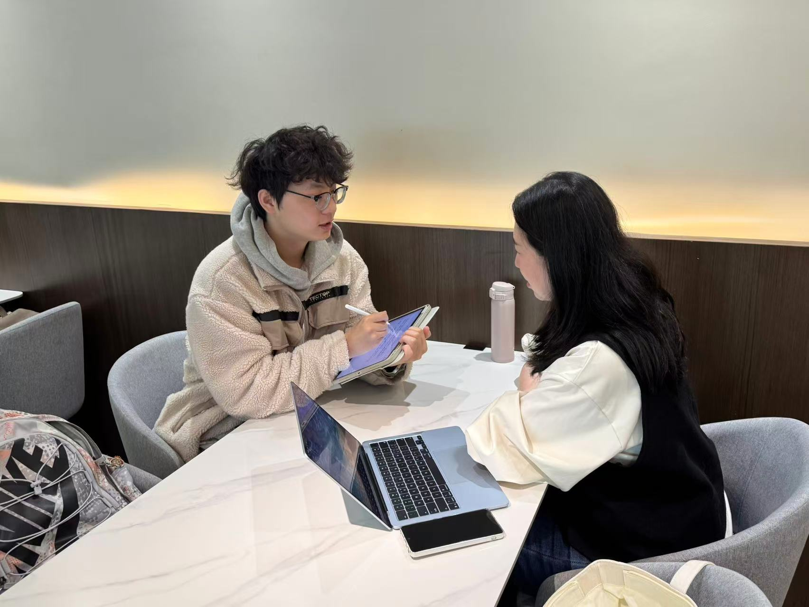
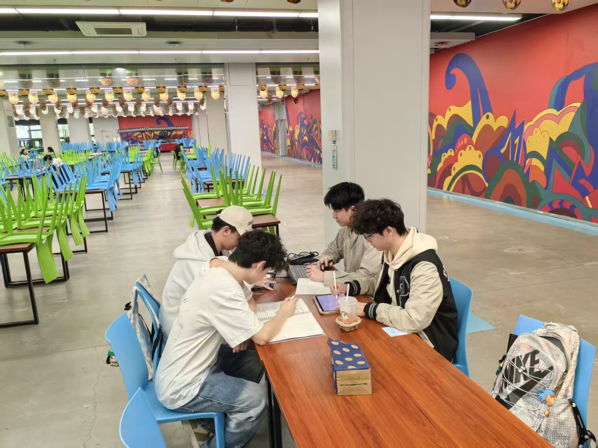
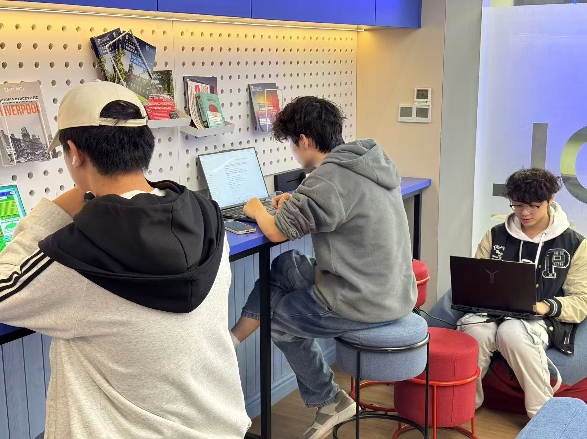
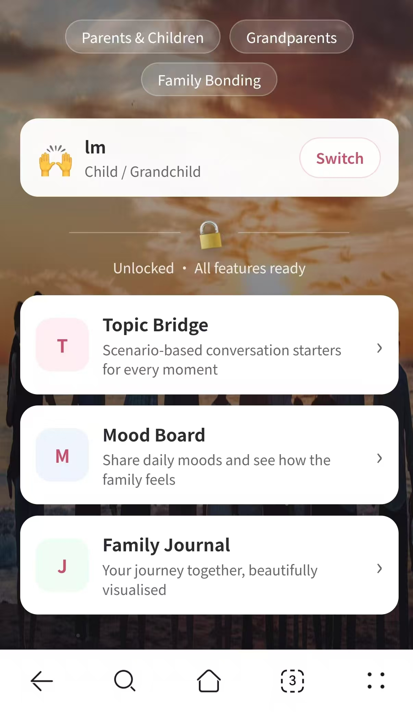

A process portfolio documenting how our group investigates playful, low-pressure ways
to help younger and older family members start conversations, share everyday life, and
build deeper emotional understanding.
Track: Social Connectivity
Platform: Mobile-first Web App
Theme: Family Connection
Submission: Process Portfolio
01
Motivation & Research
This section explains why we chose the intergenerational relationship track and
what gaps we found in academic research and existing family communication products.
The Why
Designing connection, not just communication efficiency
Our group chose Relation between Generations because we wanted to address a
human-centered problem that is both common and emotionally meaningful: the weakening
of communication across generations. We are especially interested in this topic
because many parent-child and grandparent-grandchild relationships are not defined
by open conflict, but by a quieter problem. Conversations often remain superficial,
stop easily, or fail to build real mutual understanding. In many families, people
care deeply about one another, yet they lack shared topics, low-pressure ways to
communicate, and opportunities to understand each other's everyday lives.
We chose this track because it allows us to design for connection rather than only
efficiency. Compared with general communication tools, this topic gives us a chance
to explore how playful and lightweight interactions can support empathy, curiosity,
and long-term closeness across age groups. We are also interested in the challenge
of creating a mobile-first experience that remains accessible to both younger and
older users in hybrid family contexts.
Academic Research
What existing studies do well
Existing research shows that intergenerational support does not depend on one
single communication channel. It can be improved through mobile storytelling,
asynchronous media exchange, and remote collaborative play.
Reis et al. provide an overview of major technology forms in this area, while
Druin et al. highlight the potential of intergenerational mobile story creation.
Bentley et al. show how asynchronous video can strengthen family connection, and
Yuan et al. demonstrate how collaborative games can support higher-quality
intergenerational conversations.
These studies are strongly user-centered. For example, Druin et al. use
participatory design, Bentley et al. conduct a field evaluation with 20
participants, and Yuan et al. use parent-child design probes with 15 groups from
16 families.
Commercial Products
What current products do well
Marco Polo lowers the barrier to contact through asynchronous video, making it
easier for families to communicate even when they are not available at the same
time.
FamilyAlbum supports safe and organized sharing of family photos and videos,
while StoryCorps uses guided questions, recording, and archiving to structure
meaningful conversations.
Caribu combines video calling with shared reading, drawing, and games, proving
that joint activities can create a stronger sense of remote companionship.
Research Gap
What is still missing
Existing papers validate storytelling, asynchronous communication, and shared
activities, but these mechanisms are usually studied as separate interaction
paradigms.
There is still a lack of a unified model that connects topic initiation, life
exchange, and shared memory building into one continuous experience.
Many studies offer research prototypes or design probes, but fewer provide a
product pathway for lightweight, repeated, everyday relationship maintenance.
Product Gap
From staying in touch to understanding each other
Marco Polo is mainly a communication channel, FamilyAlbum is mainly a media
archive, StoryCorps is closer to a deep interview tool, and Caribu focuses on
remote co-play.
Most products help users keep contact or complete sharing, but they do not
actively guide two generations to understand each other's life worlds.
A stronger solution should help both sides compare experiences, respond to each
other's perspectives, and turn small interactions into deeper mutual
understanding.
Our opportunity is to design a gentle, playful bridge that makes starting a
conversation easier and makes family memories easier to grow over time.
Stakeholder Personas
Primary and secondary users
The personas below represent two sides of the same intergenerational relationship:
a young adult who wants communication to feel more natural, and an older family
member who wants to participate but may feel uncertain with digital tools.

Ethan - young family member and mobile-first user

Martha - older family member and family-oriented user
02
User Requirements
This section will connect user pain points to design requirements and show evidence
from interviews or observations.
User Journey Map
Current communication journey
The following journey map captures how intergenerational conversations often begin
with care, but break down because of awkward openings, mismatched communication
styles, and the lack of a shared playful bridge.

User Journey Map from our research synthesis and family communication analysis.
Requirement 1
Topic Bridge
Lightweight conversation starters
The system should lower the pressure of beginning a conversation and create a
natural opening point for both generations.
Natural opening
The system should provide short, low-pressure prompts to help family members
start conversations naturally.
Warm and playful tone
Prompts should include a sense of randomness, fun, or warmth to encourage
engagement.
Two-way interaction
Both sides should be able to answer, respond, and extend the topic into a
back-and-forth exchange.
Requirement 2
Emotion Sharing / Mood Board
Low-barrier emotional expression
Emotional communication should be quick, visible, and easy to respond to, even
when users have limited time or are not comfortable with long messages.
Quick expression
Users should be able to express their daily mood quickly through emojis, colors,
or short text.
Visible trends
The system should visualize mood changes over time to help family members better
understand each other's emotional state.
Companion responses
Family members should be able to respond with short messages, stickers, or
reactions to create a sense of care and companionship.
Requirement 3
Shared Memory Map / Story Album
Playful co-creation of memories
The system should transform family memory-making into a collaborative and enjoyable
experience rather than a static archive.
Playful memory building
The system should make uploading, adding, and organizing memories feel like
playful collage-making or story co-creation.
Collaborative contribution
Family members should be able to add photos, voice notes, time, or stories to
enrich shared memories together.
Visual revisiting
Memories should be presented through visual forms such as timelines, maps, or
albums to make revisiting more enjoyable.
Evidence of Life
Interview and observation evidence
These field photos document our group interviews, contextual observations, and
collaborative research process while exploring intergenerational communication
patterns.

Context observation with family members

One-to-one interview session

Research notes and participant feedback

Group synthesis and discussion

Collaborative portfolio preparation
03
Ideation & Alternatives
This section records how the group explored different playful interaction ideas,
compared alternatives, and selected the most promising direction.
Crazy Eights
Rapid UI sketches
Upload photos of eight hand-drawn interface ideas here. Each sketch should show a
different way to create intergenerational play or conversation.
Sketch 1
Sketch 2
Sketch 3
Sketch 4
Sketch 5
Sketch 6
Sketch 7
Sketch 8
Design Alternatives
Comparing possible system directions
Alternative
Strength
Limitation
Decision
Prompt-based conversation cards
Easy to start and suitable for short daily use.
May become repetitive without memory building.
Keep as an entry point.
Shared memory album
Good for long-term emotional value and reflection.
Needs enough interaction before it becomes meaningful.
Use as a growing archive.
Mini collaborative activities
More playful and engaging for both generations.
Must stay simple for older users and busy young users.
Combine selectively with prompts.
Low-Fi PrototypeReplace this placeholder with the clickable Figma prototype URL.
This section explains how the product prototype is structured and demonstrates
the three core features through interactive screen walkthroughs.
High-Fi Prototype
Hosted product link
This live H5 web prototype is deployed on Vercel. It demonstrates the main
product flow of our intergenerational communication system, including Topic
Bridge, Mood Board, and Family Journal.
The product is implemented as a mobile-first Vue 3 web application built with Vite.
Vue Router manages navigation between feature pages, while Axios connects the
frontend with REST API endpoints for authentication, topics, mood check-ins,
weekly mood summaries, reports, and admin-managed content.
01User Access
Users open the H5 product through the hosted Vercel link and log in or register.
→
02Vue Frontend
Feature pages are organised through Vue views, reusable components, and routing.
→
03Axios API Layer
Frontend actions request topics, mood data, reports, and account operations.
→
04Family Interaction Data
Conversation, emotion, and journal data return to form a continuous family experience.
Vue 3ViteVue RouterAxiosREST APIVercel Deployment
Interactive Feature Walkthrough
Manual screen walkthroughs for the three core features
Each feature is presented as a phone-based walkthrough. Use the Previous and Next
buttons to move through the screens manually.

01
Topic Bridge
Prototype opening
The walkthrough begins with the shared opening screen before moving into the
Topic Bridge interaction flow.
02
Emotion Sharing / Mood Board
Prototype opening
The walkthrough begins with the shared opening screen before moving into the
Mood Board emotional check-in flow.
03
Shared Family Journal
Prototype opening
The walkthrough begins with the shared opening screen before moving into the
Family Journal summary view.
Implementation Summary
From interface to interaction data
Frontend Structure
The product uses Vue views, reusable components, layouts, and global styles to
organise a mobile-first H5 interface.
API Communication
Axios modules connect the frontend to user and admin API routes, including
login, topics, mood check-ins, weekly mood data, reports, and content management.
Authentication
After login, the returned token is stored locally and attached to later requests
through the Authorization Bearer header.
Individual Contributions
Group member responsibilities
Member
Main Contribution
Evidence to Add
Member 1
Research, requirements, and portfolio content writing.
Research notes / interview evidence.
Member 2
UI design, visual assets, and high-fi screen preparation.
Prototype screenshots / visual assets.
Member 3
Frontend implementation, routing, API integration, and interaction logic.
Feature screenshots / implementation records.
Member 4
User testing, evaluation, demo preparation, and refinement documentation.
Testing notes / before-after evidence.
05
Evaluation & Reflection
This section will show usability testing with real users, design refinements based
on feedback, and final reflection on ethics, accessibility, and AI use.
User Test 1
Add participant profile, task, key observation, and design implication.
User Test 2
Add participant profile, task, key observation, and design implication.
User Test 3
Add participant profile, task, key observation, and design implication.
Iterative Refinement
Before and after screenshots
Before screenshot
After screenshot
Final Reflection
Social and ethical implications
Discuss how the design respects different digital abilities, avoids forcing
emotional disclosure, supports accessibility, and treats family memories as
sensitive personal content.
Technical Reflection
AI use and verification
If AI-assisted coding is used, document the main prompts, how the generated code
was checked against user requirements, and any ethical considerations such as
accessibility, bias, and transparency.
References
Research, products, and AI tools
Add complete references for academic papers, commercial products, images, and any
AI tools used for coding, writing support, visual assets, or video production.